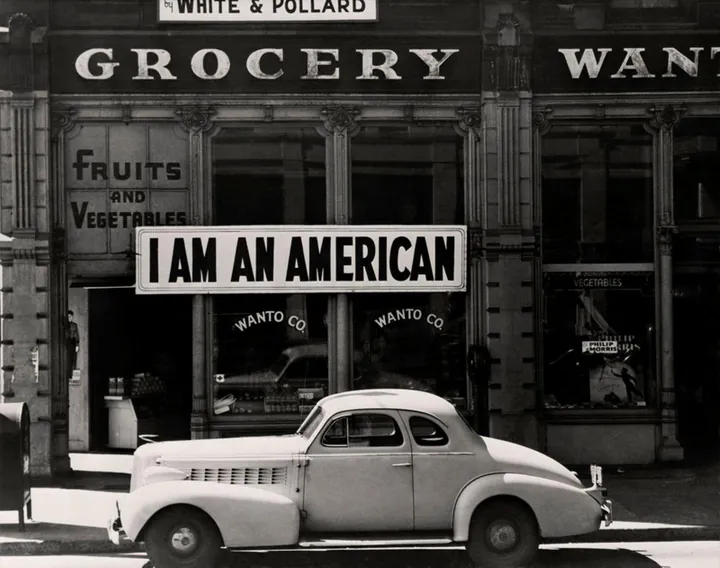

da gio 30 lug a dom 1 nov
Dorothea Lange
Gli spazi del Centro Internazionale di Fotografia Scavi Scaligeri di Verona ospitano una grande mostra dedicata alla fotografa documentaria Dorothea Lange . La mostra, curata da Walter Guadagnini e Monica Poggi, ripercorre gli anni che vanno dalla Grande Depressione…
 Indicazioni
Indicazioni
- Costi e prenotazioni
- Costo non indicato · Prenotazione non indicata
- Programma
- Programma da verificare. Apri la fonte ufficiale per orari e possibili aggiornamenti.
- In caso di maltempo
- Nessuna indicazione specifica pubblicata.
- Note
- Acquisito automaticamente dalla fonte.
L’EVENTO
Descrizione completa
Gli spazi del Centro Internazionale di Fotografia Scavi Scaligeri di Verona ospitano una grande mostra dedicata alla fotografa documentaria Dorothea Lange . La mostra, curata da Walter Guadagnini e Monica Poggi, ripercorre gli anni che vanno dalla Grande Depressione all’internamento dei cittadini statunitensi di origine giapponese durante la Seconda guerra mondiale. I grandi cambiamenti della storia vengono catturati attraverso l’obiettivo dell’artista statunitense che racconta questo periodo storico partendo dalla vita delle persone: migrazioni, disuguaglianze sociali, discriminazioni e crisi ambientali diventano protagonisti del percorso espositivo che accompagna il visitatore attraverso gli Stati Uniti degli anni Trenta e Quaranta. Le prime immagini osservano gli effetti della Grande Depressione nelle città, tra uffici di collocamento, scioperi e manifestazioni, per poi spostarsi lungo le strade percorse da migliaia di famiglie costrette ad abbandonare le proprie terre a causa della siccità, delle tempeste di sabbia e della crisi agricola.
Attraverso circa 200 fotografie provenienti dalle collezioni della Library of Congress di Washington e della New York Public Library , lo sguardo di Dorothea Lange continua a interrogare il presente, ricordando che dietro le grandi crisi, le trasformazioni economiche e le decisioni della politica ci sono sempre le vite, i volti e la dignità delle persone che le attraversano .
IL PROGRAMMA
Programma e orari
Appuntamenti raccolti dalle fonti elencate. Dove manca un orario, non è ancora disponibile in questa scheda.
Programma pubblicato
- 2026-07-30 — 2026-11-01 · 10:00:00
INFORMAZIONI UTILI
Prima di partire
- Controllare la fonte prima di partire.
ORGANIZZAZIONE